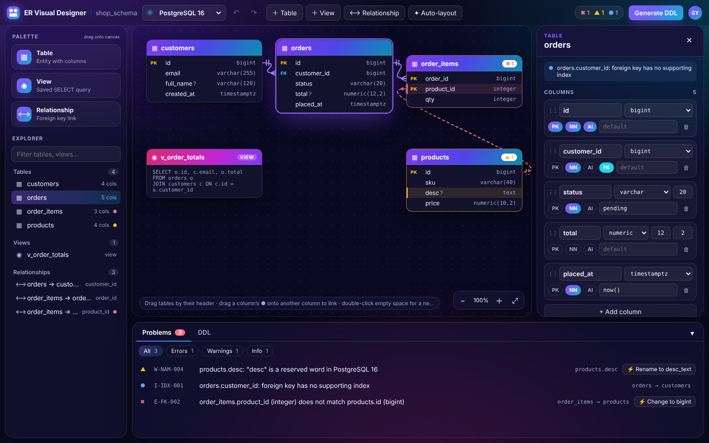
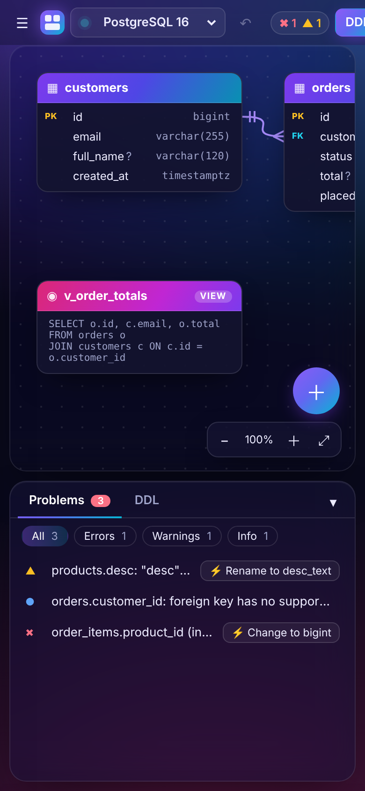
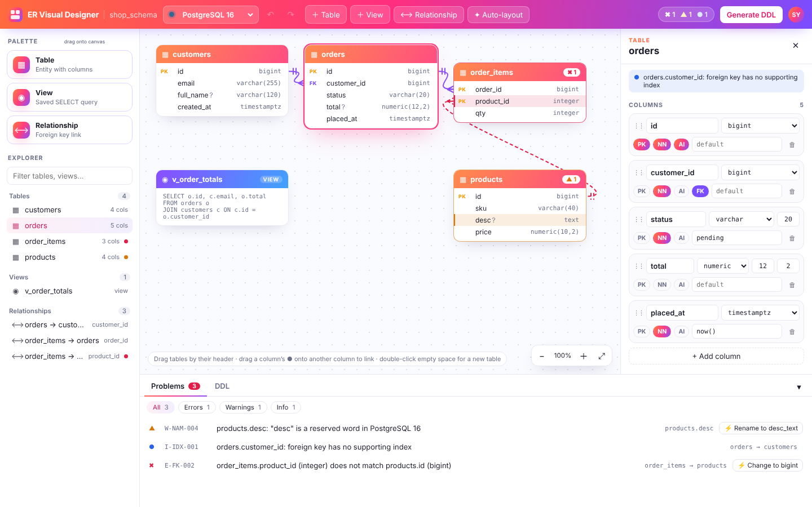
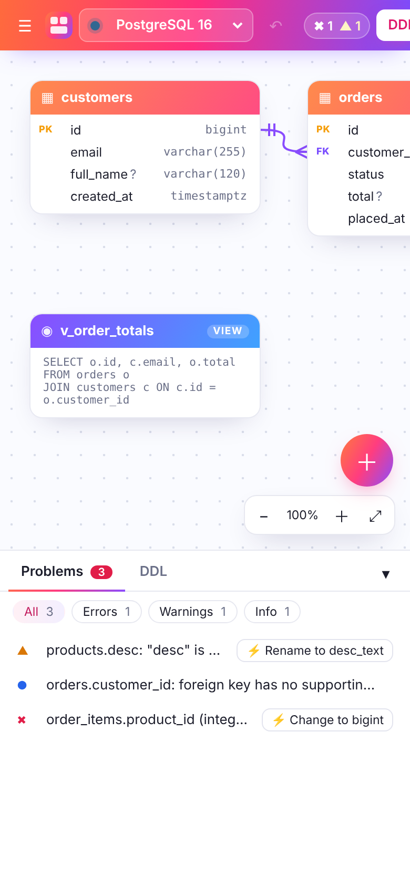
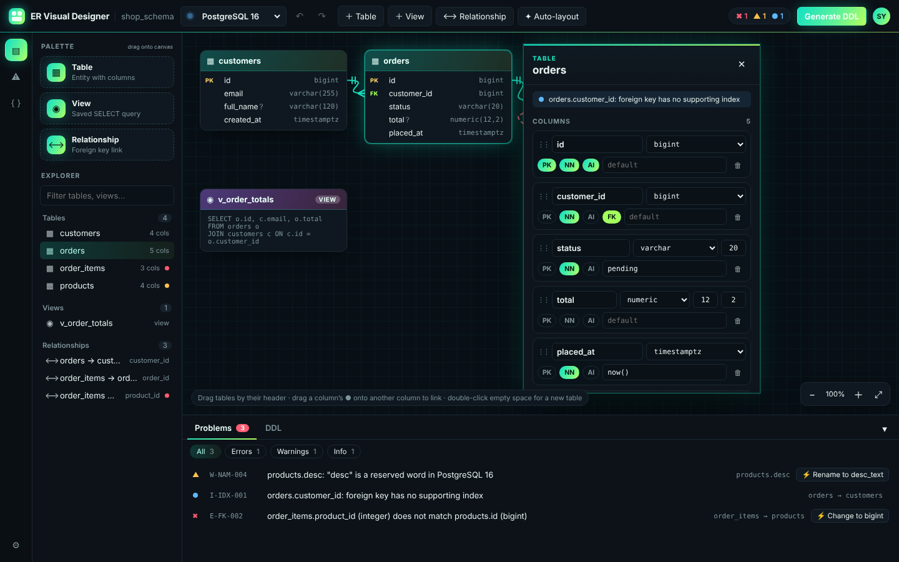
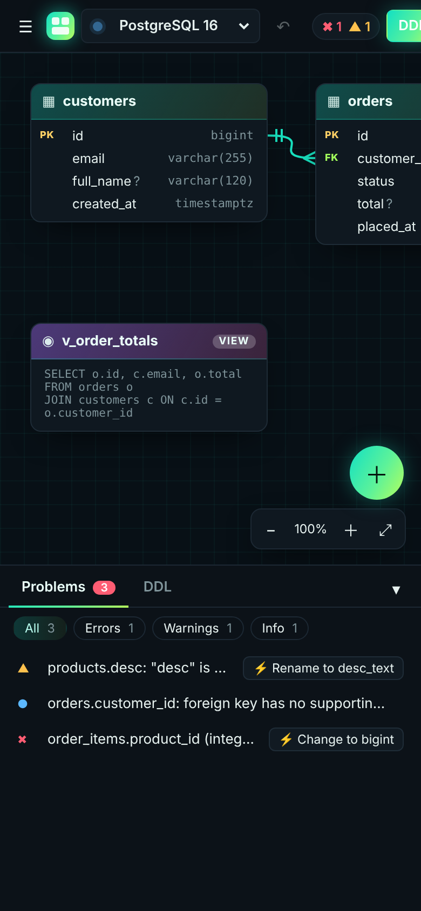

ER Visual Designer — pick a direction
Three interactive mockups of the same workspace. Each one is a single HTML file that runs in the browser with no setup. They all share the same behaviour, so you can compare look and layout directly.


Aurora Glass
Dark theme with frosted-glass panels floating over a violet-to-cyan aurora gradient. Table headers carry the gradient, and the editor is docked on the right.
Strengths
- Most distinctive and modern look
- Comfortable for long sessions (dark)
- Floating panels make the canvas feel spacious
Trade-offs
- Glass blur costs some GPU on older laptops
- Lower contrast than B on projectors and in screenshots



Sunrise Studio
Light, docked layout in the style of an IDE, with a coral-magenta-violet gradient across the top bar, table headers and primary actions. The editor is docked on the right.
Strengths
- Highest readability and contrast
- Familiar layout (like VS Code or DBeaver)
- Prints and screenshots well for documentation
Trade-offs
- Less striking than A or C
- Needs a separate dark mode for users who prefer one



Neon Flow
Compact, dark professional tool with teal-to-lime neon accents and a left icon rail. There is no fixed right panel: the column editor pops out next to the selected table, so you edit where you're looking.
Strengths
- Widest canvas, because there's no permanent right panel
- Editing happens right beside the table
- Dense layout suits power users
Trade-offs
- The pop-out can cover neighbouring tables (it fades while you link)
- The neon style is the most opinionated of the three